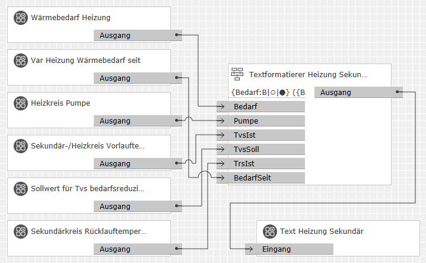

Benutzer, die bisher eine Version vor 0.9.x verwendet haben, müssen unbedingt die Update-Anleitung beachten! Ansonsten kann es zu Fehlern im GPA kommen, die sich nur durch Löschen ganzer Logikblätter – oder im schlimmsten Fall Neuanlegen des Projekts – beheben lassen.
Dieser Baustein setzt einen oder mehrere Ausgabetexte aus Formatvorlagen und den darin referenzierten Eingangswerten zusammen. Formatvorlagen bestehen aus festen Textbestandteilen und Platzhaltern für die Eingangswerte. Die Platzhalter bestimmen Anzahl, Namen und Porttypen der Eingänge. Ihre Parameter steuern auch, wie die Eingangswerte im Ausgabetext dargestellt werden.
Folgende Arten von Eingangswerten können verarbeitet werden:
Bei Zahlenwerten aller Typen lassen sich Werte oder Wertebereiche definieren, die als Textbausteine anstelle der Zahldarstellung ausgegeben werden sollen.
Solange keine gültige Formatvorlage(n) festgelegt wurde(n), hat der Baustein keine Eingänge. Eingänge werden nur durch gültige Platzhalter in den Formatvorlagen angelegt. Ihre Reihenfolge ergibt sich – für jeden Porttyp getrennt – aus der Reihenfolge der entsprechenden Platzhalter in den Formatvorlagen. In der Tabelle sind die automatisch vergebenen Eingangsnamen genannt. Diese werden verwendet, soweit Platzhalter keine benutzerdefinierten Namen enthalten.
Bezeichnung |
Porttyp |
Beschreibung |
|---|---|---|
|
Binär 1 |
Bool |
Werte für Wahrheitswert-Platzhalter. |
|
Ganzzahl 1 |
Integer |
Werte für Ganzzahl-Platzhalter. |
|
Zahl 1 |
Number |
Werte für Fließkommazahl-Platzhalter (auch Prozentwerte). |
|
Text 1 |
String |
Werte für Text-Platzhalter. |
Bezeichnung |
Porttyp |
Beschreibung |
|---|---|---|
|
Ausgang 1 |
String |
Alle Ausgänge geben formatierte Texte aus, sobald der erste Eingangswert empfangen wurde. Dies gilt auch für solche Ausgangstexte, die den empfangenen Wert gar nicht verwenden. Nicht empfangene Eingangswerte werden als ? dargestellt. Hinweise:
|
Bezeichnung |
Porttyp |
Als Eingang zuschaltbar? |
Beschreibung |
|---|---|---|---|
|
Anzahl der Ausgänge und Formatvorlagen |
Integer |
nein |
Dieser Parameter legt die Anzahl der Ausgänge des Bausteins im Bereich 1..50 fest. Da jeder Ausgang seine eigene Formatvorlage hat, legt dies auch die Anzahl der Formatvorlagen fest. |
|
Formatvorlage 1 |
String |
nein |
Diese Parameter legen fest, aus welchen Bestandteilen die entsprechenden Ausgangstexte jeweils bestehen. Darin wechseln sich fixe Textteile und Platzhalter für Eingangswerte ab. Im nächsten Kapitel sind die möglichen Platzhalter detailliert beschrieben. |
|
Dezimaltrennzeichen |
String |
nein |
Das hier eingegebene Zeichen wird ggf. verwendet, um den ganzzahlingen Anteil von den Nachkommastellen einer Fließkommazahl zu trennen. Das Eingabefeld muss genau ein Zeichen enthalten. Hinweise:
|
|
Gruppentrennzeichen |
String |
nein |
Das hier eingegebene Zeichen wird ggf. verwendet, um die Ziffern großer Fließkommazahlen in Dreiergruppen zu formatieren. Dies dient der besseren Lesbarkeit. Es darf höchstens ein Zeichen – und nicht das Dezimaltrennzeichen – angegeben werden. Hinweise:
|
Platzhalter in der Formatvorlage dienen dazu, Eingangswerte formatiert in den Ausgabetext einzusetzen. Textbestandteile zwischen den Platzhaltern werden unverändert in den Ausgabetext übernommen. Sie dürfen auch leer sein. Platzhalter dürfen also ganz am Anfang oder ganz am Ende der Formatvorlage stehen oder direkt aufeinander folgen.
Es gibt zwei grundlegende Arten von Platzhaltern:
Syntaxelemente in [...] können auch weg gelassen werden.
Eingangsname wird als Bezeichnung des Baustein-Eingangs verwendet. Definitionen legen Eingänge an und formatieren deren Werte als Teil des Ausgabetexts. Referenzen verwenden den Wert eines vorher definierten Eingangs erneut. Sie dürfen sich auch auf Namen beziehen, die in einer anderen Formatvorlage mit einer niedrigeren Nummer definiert worden sind. Dabei können abweichende Formatierungsparameter, aber kein abweichender Datentyp festgelegt werden. Wird bei einer Definition kein Name angegeben, so wird automatisch einer erzeugt (siehe Tabelle "Eingänge" oben).
Eingangsname muss mit einem Buchstaben beginnen. Weiter kann er auch Ziffern, Leer- und Interpunktionszeichen enthalten, mit Ausnahme von geschweiften Klammern ({ und }) und Doppelpunkt (:). Leerzeichen am Anfang oder am Ende werden nicht in den Namen übernommen.
T ist ein Buchstabe, der den Datentyp des Eingangs und
die grundlegende Art der Darstellung im Ausgabetext festlegt.
Danach kann Format je nach Datentyp noch weitere Anweisungen
für die Darstellung bestimmter Werte oder Wertebereiche geben.
Folgende Buchstaben – Groß- und Kleinbuchstaben haben gleiche
Bedeutung – und Formatparameter sind möglich:
Das Format für numerische Werte kann zusätzlich eine oder mehrere – durch | getrennte – Textzuweisungen enthalten. Diese bilden Zahlenwerte am Eingang auf Unicode-Textbausteine im Ausgabetext ab.
Soll ein einzelner Zahlenwert auf einen Text
abgebildet werden so folgt die Zuweisung dieser Form:
[Wert=][Text]
Darin ist Wert eine Dezimalzahl, bei der ggf. als
Dezimaltrennzeichen ein Komma (,) vor den Nachkommastellen
steht. Gruppentrennzeichen (Tausendertrennzeichen) dürfen
nicht verwendet werden. Bei Ganzzahlen kann der Wert
bei allen Zuweisungen eines Platzhalters entfallen. Werte
werden dann automatisch von Null aufsteigend vergeben.
Um einen Wertebereich (Intervall) auf einen Text
abzubilden, folgt die Zuweisung dieser Form:
[[>]Wert]..[[<]Wert]=[Text]
Dabei ist der erste Wert der untere Grenzwert des Intervalls,
der zweite der obere.
Die optionalen Zeichen > bzw. < geben an, dass der Grenzwert selbst ausgeschlossen ist (also ein offenes Intervall festgelegt werden soll). Ohne sie ist der Grenzwert jeweils enthalten (geschlossenes Intervall). Um den unteren Grenzwert auf den kleinstmöglichen Wert des Datentyps (oder den oberen Grenzwert auf den größtmöglichen Wert) zu setzen, lässt man den entsprechenden Wert einfach weg.
Wenn sich die Bereiche oder Werte mehrerer Zuweisungen überschneiden, so greift die erste passende Zuweisung. Passt für einen Eingangswert keine der Zuweisungen, so wird der Wert numerisch – wie im vorigen Abschnitt beschrieben – ausgegeben.
Text darf – wie schon bei Wahrheitswerten – alle Sonderzeichen mit Ausnahme von geschweiften Klammern ({ und }), Doppelpunkt (:), Gleichheitszeichen (=) und senkrechtem Strich (|) enthalten, also auch Leerzeichen. Wenn ein Wert oder Bereich angegeben ist, darf der Text auch leer sein, um die Ausgabe zu unterdrücken.
Ähnlich wie numerische Werte oder Wertebereiche durch Texte ersetzt werden können, ist es mit Text-Platzhaltern möglich, bestimmte Textteile in den Eingangswerten durch andere zu ersetzen. Das Format von Text-Platzhaltern kann dazu eine oder mehrere – durch | getrennte – Textersetzungen enthalten. Diese bilden Originaltexte am Eingang auf Ersetzungstexte im Ausgabetext ab.
Die einzelnen Textersetzungen haben dabei folgende Form:
Originaltext=[Ersetzungstext]
Die Texte dürfen alle Sonderzeichen mit Ausnahme von geschweiften
Klammern ({ und }), Doppelpunkt (:),
Gleichheitszeichen (=) und senkrechtem Strich (|)
enthalten, also auch Leerzeichen und Unicode-Zeichen. Der Originaltext
muss mindestens ein Zeichen umfassen. Der Ersetzungstext darf auch
leer sein.
Sind mehrere Textersetzungen angegeben, so werden sie von links nach rechts angewendet. Weiter hinten stehende Ersetzungen wirken daher auch auf Textteile, die in einer vorherigen Ersetzung erst eingefügt worden sind. Sie wirken andererseits nicht mehr auf Textteile, die bereits von einer weiter vorne stehenden Ersetzung entfernt oder verändert worden sind.
Den Wetterkurztext eines Internet-Wetterdienstes als Unicode-Piktogramm
ausgeben:
In der der Visualisierung einer Heizungsanlage sollen die Daten eines Heizkreises möglichst kompakt gezeigt werden. Dazu werden Unicode- Piktogramme und gerundete Werte verwendet. Sprechende Namen für alle Eingänge machen das Logikblatt leicht verständlich:

Die verwendete Formatvorlage ist:
Sechs Eingangsgrößen verschiedener Typen und (sehr wenig) Festtext setzen den Ausgabetext zusammen. Dieser zeigt – durch senkrechte Striche getrennt – die folgenden Daten:
Der fertig formatierte Ausgabetext sieht dann z. B. so aus:
Eine Kachel (Statusanzeige Text) der X1-Visualisierung kann so kompakt und übersichtlich alle Kenngrößen des Heizkreises anzeigen.